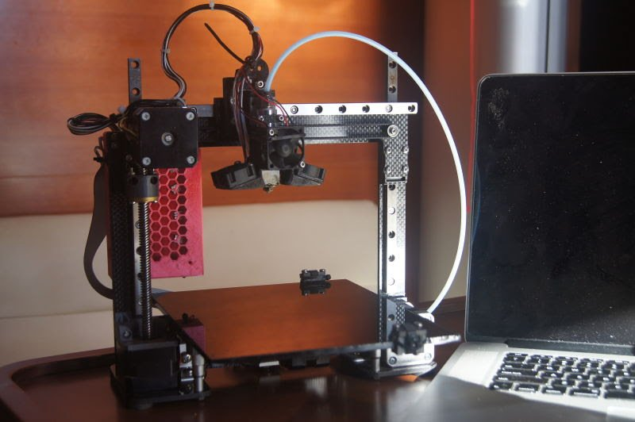
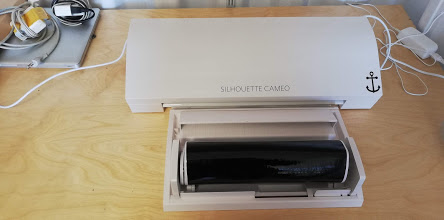
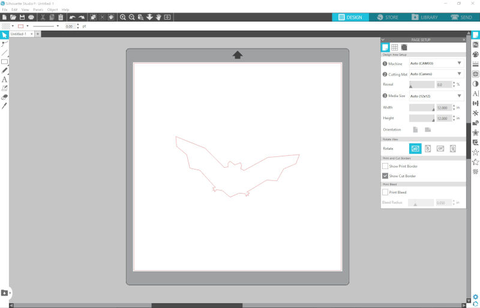
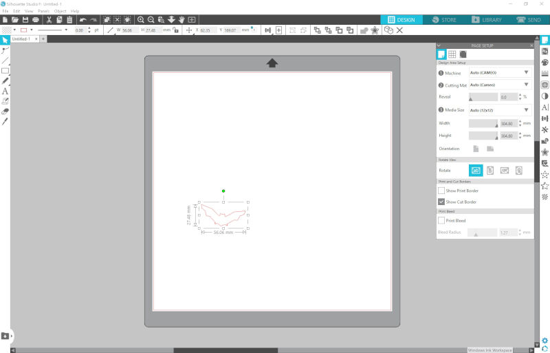
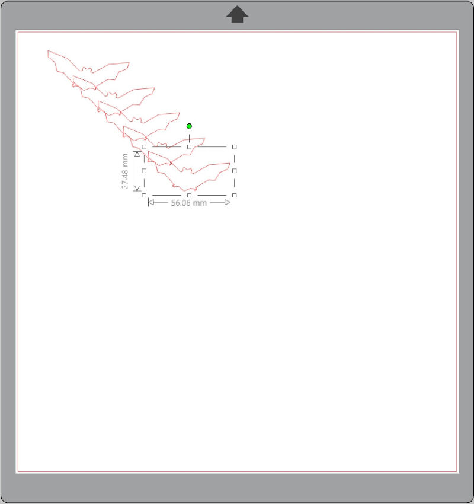
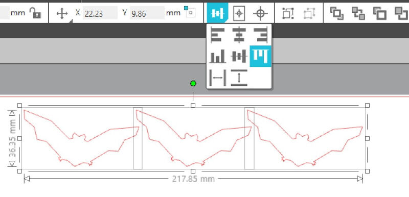
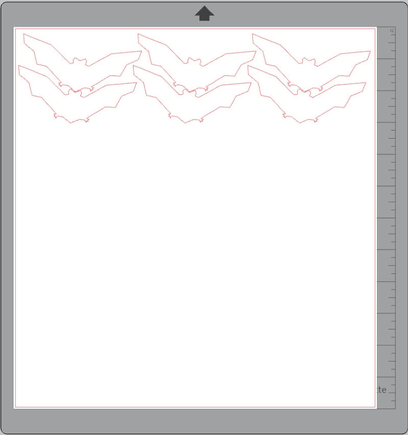
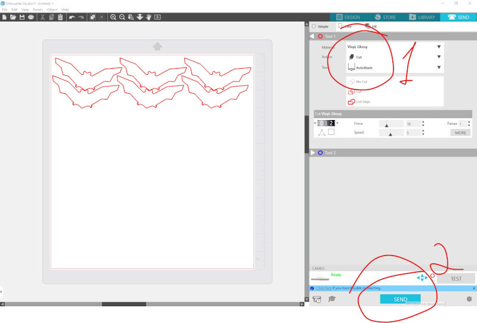

Week 03
Computer-Controlled Cutting
Laser Cutting
Group Assignment
- Characterize your lasercutter, making lasercutter test part(s), making test part(s) that vary cutting settings and dimensions(group project)
Individual assignment
- Cut something on the vinylcutter
- Design, lasercut, and document a parametric press-fit construction kit, accounting for the lasercutter kerf, which can be assembled in multiple ways
Learning outcomes:
- Demonstrate and describe parametric 2D modelling processes
- Identify and explain processes involved in using the laser cutter.
- Develop, evaluate and construct the final prototype
Have you:
- Explained how you parametrically designed your files
- Shown how you made your press-fit kit
- Included your design files and photos of your finished project
Vinyl Cutting
Individual assignment
- Cut something on the vinylcutter
Learning outcomes:
- Identify and explain processes involved in using this machine.
- Design and create the final object
Have you:
- Explained how you drew your files
- Shown how you made your vinyl project
- Included your design files and photos of your finished project
Week workflow

Tools used
- laser cutter
- Silhouette Cameo
Software Used
- Solidworks
- Ink Scape
- Repetier host
- Sublime text 3
- Silhouette Studio
Introduction
On this assignment I will be using a diode laser cutter manly. I have designed and made a 3D printer and then I upgraded it with a 2 wats diode laser cutter. I will be testing its capabilities and testing it to its limits in other to have a better understand of its capabilities and limitations. I expect to be able to use the patterns created to test other machines. On the Vinyl I will try to use the same machine and document its results.


Making test patterns
deciding what to test...
Vinyl Cutting
The Vinyl cutter we have in the Lab is the Silhouette Cameo 3. It's a nice affordable easy to use Vinyl Cutter.

It comes with the software Silhouette Studio.

Learning outcomes:
- Identify and explain processes involved in using this machine.
- Creating the file
- Selecting a file from Library
As a warm up and because we are near the Halloween I decided to cut something my kids could use

I chose the bat from the library.


Then using ctrl+c Ctrl+v I copied and pasted the bat several times.

I chose the bat from the library

I chose the bat from the library

I chose the bat from the library

I chose the bat from the library

I chose the bat from the library

- Design and create the final object
Have you:
- Explained how you drew your files
- Shown how you made your vinyl project
- Included your design files and photos of your finished project